操作系统PPT部分
第一章
1.3 计算机软件系统
软件系统的组成
系统软件：操作系统、实用程序、语言处理程序、数据库管理系统
- 操作系统实施对各种软硬件资源的管理控制
- 实用程序为方便用户所设，如文本编辑等
- 语言处理程序把用汇编语言/高级语言编写的程序，翻译成可执行的机器语言程序
支撑软件：接口软件、工具软件、环境数据库
应用软件：用户按其需要自行编写的专用程序
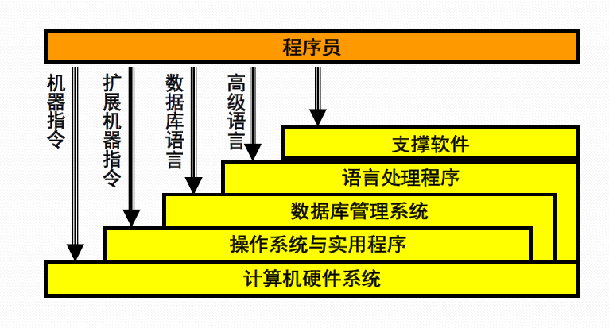
1.5 计算机操作系统
概念
- 从用户角度看，OS管理计算机系统的各种资源，扩充硬件的功能，控制程序的执行
- 从人机交互看，OS是用户与机器的接口，提供良好的人机界面，方便用户使用计算机，在整个计算机系统中具有承上启下的地位。
- 从系统结构看，OS是一个大型软件系统，其功能复杂，体系庞大，采用层次是、模块化的程序结构
类型
从操作控制方式看
- 多道批处理操作系统，脱机控制方式
- 分时操作系统，交互式控制方式
- 实时操作系统
从应用领域看
- 服务器操作系统、并行操作系统
- 网络操作系统、分布式操作系统
- 个人机操作系统、手机操作系统
- 嵌入式操作系统、传感器操作系统
1.6 从资源管理的角度
计算机系统的资源
硬件资源
- 处理器：哪个程序占用处理器运行？
- 内存：程序/数据在内存中如何分布？
- 外设：如何分配、去配和使用设备？
信息资源：如何去访问文件信息？如何管理进程之间的通信？
- 数据、程序
资源的共享与分配方式
共享方式
- 独占使用
- 并发使用
分配策略
- 静态分配
- 动态分配
- 资源抢占
1.7 从控制程序执行的视角
多道程序设计
让多个程序同时进入计算机的主存储器进行计算
多道程序设计的优点
- CPU与外部设备充分并行
- 外部设备之间充分并行
- 发挥CPU的使用效率
- 提高单位时间的算题量
多道程序系统的实现
- 为进入内存执行的程序建立管理实体：进程
- OS应能管理与控制进程程序的执行
- OS协调管理各类资源在进程间的使用
- 处理器的管理和调度
- 主存储器的管理和调度
- 其他资源的管理和调度
1.8 从操作系统控制计算机的角度
命令解释程序的处理过程
- OS启动命令解释程序，输出命令提示符，等待键盘中断/鼠标点击/多通道识别
- 每当用户输入一条命令（暂存在命令缓冲区）并按回车换行时，申请中断
- CPU响应后，将控制权交给命令解释程序，接着读入命令缓冲区内容，分析命令、接受参数，执行处理代码
- 前台命令执行结束后，再次输出命令提示符，等待下一条命令
- 后台命令处理启动后，即可接受下条命令
1.10 从程序接口的角度
操作系统的程序接口
- 系统调用
- 操作系统实现的完成某种特定功能的过程
- 为所有运行程序提供访问操作系统的接口
系统调用实现机制
- 陷入处理机制：计算机系统中控制和实现系统调用的机制
- 陷入指令：也称访管指令，或异常中断指令，计算机系统为实现系统调用而引起处理器中断的指令
- 每个系统调用都事先规定了编号，并在约定寄存器中规定了传递给内部处理程序的参数
系统调用的实现要点
- 编写系统调用处理程序
- 设计一张系统调用入口地址表，每个入口地址指向一个系统调用的处理程序，并包含系统调用自带参数的个数
- 陷入处理机制需开辟现场保护区，以保存发生系统调用时的处理器现场
1.11 系统结构的视角
操作系统软件的结构设计
- OS构件：内核、进程、线程、管程等
- 设计概念：模块化、层次式、虚拟化
- 内核设计是OS设计中最为复杂的部分
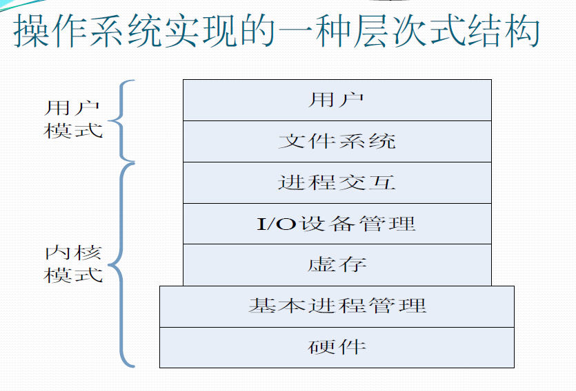
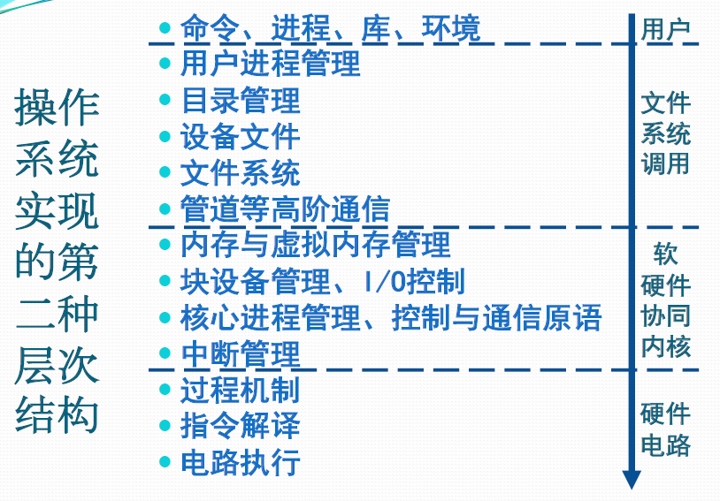
第二章
2.1 处理器与寄存器
用户可见寄存器
可以使程序员减少访问主存储器的次数，提高指令执行的效率
- 数据寄存器
- 地址寄存器：索引、栈指针、段地址等寄存器
控制与状态寄存器
用于控制处理器的操作；主要被具有特权的操作系统程序使用，以控制程序的执行
- 程序计数器PC：存储将取指令的地址
- 指令寄存器IR：存储最近使用的指令
- 条件码CC：CPU为指令操作结果设置的位，标志正/负/零/溢出等结果
- 标志位：中断位、中断允许位、中断屏蔽位、处理器模式位、内存保护位等
程序状态字PSW
PSW既是操作系统的概念，指记录当前程序运行的动态信息，通常包含：
- 程序计数器，指令寄存器，条件码
- 中断字，中断允许/禁止，中断屏蔽，处理器模式，内存保护、调试控制
PSW也是计算机系统的寄存器
- 通常设置一组控制与状态寄存器
- 也可以专设一个PSW寄存器
2.2 指令与处理器模式
处理器模式
- 0-操作系统内核 内核态
- 1-系统调用
- 2-共享库程序
- 3-用户指令等保护级别 用户态
处理器模式的切换
中断、异常、系统异常等事件导致用户程序向OS内核切换，触发用户模式向内核模式的切换
- 程序请求操作系统服务
- 程序运行时发生异常
- 程序运行时发生并响应中断
处理完成后，调用中断返回指令，触发内核模式向用户模式的切换
2.3 中断与中断源
中断概念
广义：中断是指程序执行过程中，遇到急需处理的事件时，暂时中止CPU上现行程序的运行，转去执行相应的事件处理程序，待处理完成后再返回原程序被中断处或调度其他程序执行的过程
狭义：来源于处理器之外的中断事件，即与当前运行指令无关的中断事件，如I/O中断、时钟中断、外部信号中断等
中断是激活操作系统的唯一方式
异常概念
指当前运行指令引起的中断事件，如地址异常、算术异常、处理器硬件故障等
系统异常概念
指执行陷入指令而触发系统调用引起的中断事件，如请求设备、请求I/O、创建进程等
中断源
处理器硬件故障中断事件
原因：由处理器、内存储器、总线等硬件故障引起
处理原则：保护现场、停止设备、停止CPU、向操作员报告，等待人工干预
程序性中断事件
原因：处理器执行机器指令引起
除数为0、操作数溢出等算术异常
处理原则：简单处理，报告用户；也可以用户编写中断续元程序处理
非法指令、用户态使用特权指令、地址越界、非法存取等指令异常
处理原则：终止指令
终止进程指令
处理原则：终止指令
虚拟地址异常
处理原则：调整内存后重新执行指令
自愿性中断事件
原因：处理器执行陷入指令请求OS服务引起；一般被称作系统调用
- 请求分配外设、请求I/O等待
处理原则：陷入OS，保护现场，根据功能号查入口地址，跳转具体处理程序
I/O中断事件
原因：来源于外围设备报告I/O状态的中断事件
I/O完成
处理原则：调整进程状态，释放等待进程
I/O出错
处理原则：等待人工干预
I/O异常
处理原则：等待人工干预
外部中断事件
原因：由外围设备发出的信号引起的中断事件
时钟中断、间隔时钟中断
处理原则：计时与时间片处理
设备报到与结束中断
处理原则：调整设备表
键盘/鼠标信号中断
处理原则：根据信号做出相应反应
关机/重启动中断
处理原则：写回文件，停止设备与CPU
2.5 中断系统
中断系统
概念
是计算机系统中响应和处理中断的系统包括硬件子系统和软件子系统
- 中断响应由硬件子系统完成
- 中断处理由软件子系统完成
中断装置
概念
计算机系统中发现并响应中断/异常的硬件装置
类型
- 处理器外的中断：由中断控制器发现和响应
- 处理器内的异常：由指令的控制逻辑和实现线路发现和响应，响应机制称为陷阱
- 请求OS服务的系统异常：处理器执行陷入指令时直接触发，响应机制称为系统陷阱
中断控制器
概念
CPU中的一个控制部件，包括中断控制逻辑线路和中断寄存器
- 外部设备向其发出中断请求IRQ，在中断寄存器中设置已发生的中断
- 指令处理结束前，会检查中断寄存器，若由不被屏蔽的中断产生，则改变处理器内操作的顺序，引出操作系统中的中断处理程序
陷阱与系统陷阱
概念
指令的逻辑和实现线路的一部分，陷阱指令可以使执行流程从用户态陷入内核并把控制权转移给操作系统，使得用户程序可以调用内核函数和使用硬件从而获得操作系统所提供的服务
中断响应过程
- 发现中断源
- 中断当前程序的执行
- 转向操作系统的中断处理程序
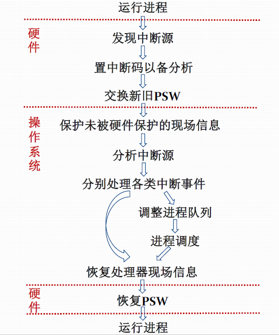
2.8 进程及其状态
进程的提出
- 操作系统必须全方位的管理计算机系统中运行的程序
- 因此，操作系统为正在运行的程序建立了一个管理实体：进程
进程的概念
- 进程是一个具有一定独立功能的程序关于某个数据集合的一次运行活动
- 进程是操作系统进行资源分配和调度的一个独立单位
进程组成
- 数据结构P（OS管理运行程序的）
- 内存代码C（运行程序的）
- 内存数据D（运行程序的）
- 通用寄存器信息R（运行程序的）
- 程序状态字信息PSW（OS控制程序执行的）
概念级的进程状态
运行态：进程占有处理器运行
就绪态：进程具备运行条件等待处理器运行
等待态：进程由于等待资源、输入输出、信号等而不具备运行条件
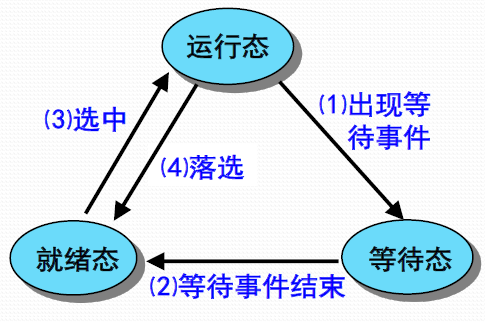
运行态→等待态：等待资源、I/O、信号
等待态→就绪态：资源满足、I/O结束、信号完成
就绪态→运行态：处理器空闲时选择更高优先级进程抢占
运行态→就绪态：运行时间片到、有更高优先级进程
进程挂起
概念
计算机系统运行过程中出现资源不足的情况（性能低、死锁）
解决办法
剥夺某些今晨给的内存及其他资源，调入OS管理的对换区，不参与进程调度，待适当时候再调入内存、恢复资源、参与运行
与等待态的区别
等待态仍然占有已申请到的资源，而挂起态没有任何资源
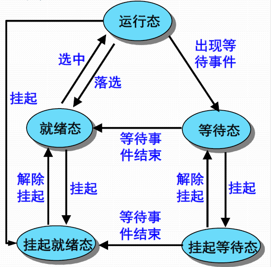
进程调度算法
FCFS （先来先服务）
- 当某个进程就绪时，都加入就绪队列(readyqueue)
- 当前正在运行的进程停止执行时，选择在就绪队列到存在时间最长的进程运行
- 对短进程不利
- 偏袒计算为主的进程
RR （时间片轮转）
- 基于时钟做抢占式调度
- 以一个周期性间隔产生时钟中断，当中断发生时，当前正在运行的进程被置于就绪队列中，然后基于FCFS策略选择下一个就绪进程运行
SPN (最短进程优先)
- 非抢占式调度
- 选择所需处理时间最短的进程
- 短进程将会越过长进程，优先获得调度
- 只要持续不断地提供更短的进程，长进程就有可能饿死。
SRTF （最短剩余时间优先）
- 抢占式调度
- 调度器总是选择预期剩余时间更短的进程
- 当一个新进程加入就绪队列，他可能比当前运行的进程具有更短的剩余时间，只要该新进就绪，调度器就可能抢占当前正在运行的进程
HRRF （最高相应比优先）
选择响应比最高的
Feedback （多级反馈调度）
- 建立多个不同优先级的就绪进程队列
- 多个就绪进程队列之间按照优先数调度
- 高优先级的就绪进程, 分配的时间片短
- 单个就绪进程队列中的进程的优先数和时间片相同，按照先来先服务算法调度
- 每当进程被抢占时便降入下一个优先级队列
2.9 进程的数据描述
进程控制块（PCB）
是OS用于记录和刻画进程状态及环境信息的数据结构
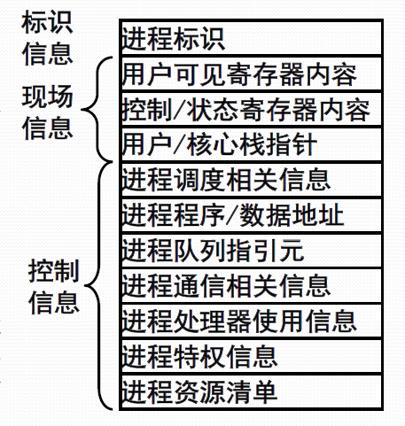
进程映像（PI）
某一时刻进程的内容及其执行状态集合
- 进程控制块：保存进程的标识信息、状态信息和控制信息
- 进程程序块：进程执行的程序空间
- 进程数据块：进程处理的数据空间
- 核心栈：进程在内核模式下运行时使用的堆栈
进程上下文（Process context）
- 用户级上下文：用户程序块/用户数据区/用户栈/用户共享内存
- 寄存器上下文：PSW/栈指针/通用寄存器
- 系统级上下文：PCB/内存区表/核心栈
2.10 进程的管理
- 进程创建：进程表加一项，申请PCB并初始化，生成标识，建立映像，分配资源，移入就绪队列
- 进程撤销：从队列中移除，归还资源，撤销标识，回收PCB，移除进程表项
- 进程阻塞：保存现场信息，修改PCB，移入等待队列，调度其他进程执行
- 进程唤醒：等待队列中移出，修改PCB，移入就绪队列（该进程优先级高于运行进程触发抢占）
- 进程挂起：修改状态并出入相关队列，收回内存等资源送至对换区
- 进程激活：分配内存，修改状态并出入相关队列
2.12 多线程技术概览
多线程环境下进程的概念
是操作系统中进行保护和资源分配的独立单位
多线程环境下线程的概念
是进程的一条执行路径，是调度的基本单位，同一个进程中的所有线程共享进程获得的主存空间和资源
2.13 KLT和ULT
KLT 内核级线程
- 线程管理的所有工作由OS内核来做
- OS提供了一个应用程序设计接口API，供开发者使用KLT
- OS直接调度KLT
ULT 用户级线程
- 用户空间的线程库提供多线程应用程序的开发和运行支撑环境
- 任何应用程序均需通过线程库进行程序设计，再与线程库连接后运行
- 线程管理的所有工作都由应用程序完成，内核没有意识到线程的存在
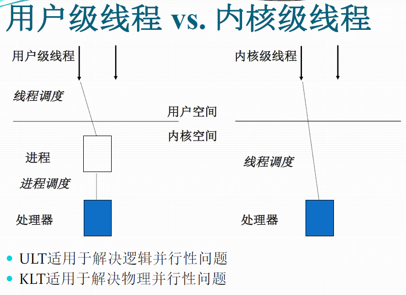
2.15 处理器调度的层次
高级调度：长程调度，作业调度（是否构成进程）
- 决定能否加入到执行的进程池
中级调度：平衡负载调度（哪些进程被允许驻留在主存中参与资源竞争）
- 决定主存中的可用进程集合
低级调度：短程调度，进程调度（把处理器分配给就绪态进程或内核级线程）
- 决定哪个可用进程占用处理器执行
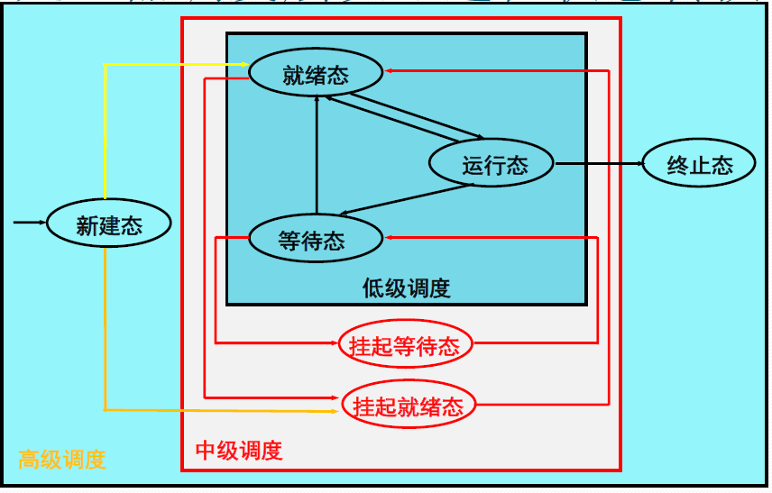
2.16 处理器调度算法
时间片轮转调度
各个进程进入就绪队列的时间先后轮流占用CPU一个时间片
分级调度
建立多个不同优先级的就绪进程队列，高优先级的分配时间片短，低优先级的时间片长
彩票调度
每个进程有张彩票，调度程序随机选择一张彩票调度
第三章
3.1 存储器管理的主要模式
地址
逻辑地址：相对地址，用户编程所用的地址空间
- 从0开始编号
- 一维逻辑地址（地址）
- 二维逻辑地址（段号：段内地址）
- 段式程序：把一个程序设计成多个段（代码段、数据段、堆栈段等）
- 不是OS存储管理的功能
- 从0开始编号
物理地址：绝对地址，程序执行所使用的地址空间
- 处理器执行指令按照物理地址进行
基本模式
- 单连续存储管理：一维逻辑地址空间的程序占用一个主存固定分区或可变分区
- 段式存储管理：段式二维逻辑地址空间的程序占用多个主存可变分区
- 页式存储管理：一维逻辑地址空间的程序占用多个主存页架区
- 段页式存储管理：段式二维逻辑地址空间的程序占用多个主存页架区
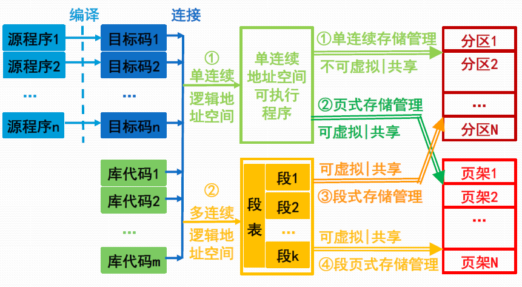
3.7 页式存储管理
地址
逻辑地址
页号+单元号
物理地址
页架号+单元号
转换思路
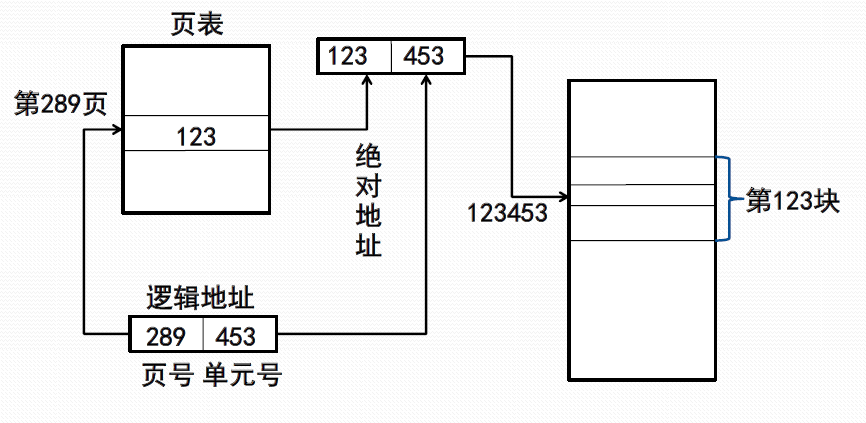

3.9 页式虚拟存储管理
地址转换
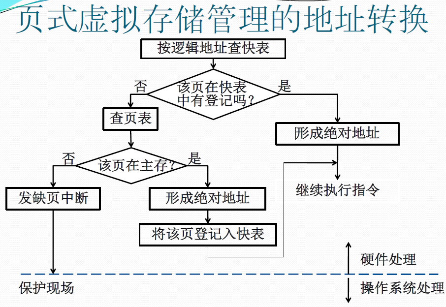
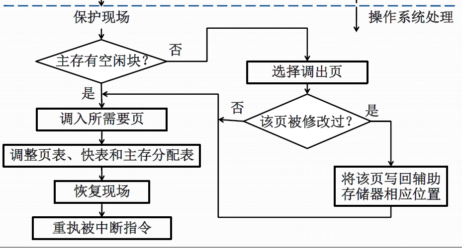
3.10 页面调度
OPT页面调度算法
当要调入新页面时，首先淘汰以后不再访问的页，然后选择距离现在最长时间后再访问的页
先进先出FIFO页面调度算法
总是淘汰最先调入主存的那一页，或者说在主存驻留时间最长的那一页
最近最少用LRU页面调度算法
淘汰最近一段时间较久未被访问的那一页，即那些刚被使用过的页面可能马上还要被用到
最不常用LFU页面调度算法
淘汰最近一段时间访问次数较少的页面
时钟CLOCK页面调度算法
采用循环队列机制构造页面队列，形成类似于钟表面的环形表
队列指针指向要淘汰的页面
3.12 段式存储管理
概念
- 每个程序可由若干段组成，每一段都是从0开始编址，段内地址连续
- 段号：单元号
地址转换流程
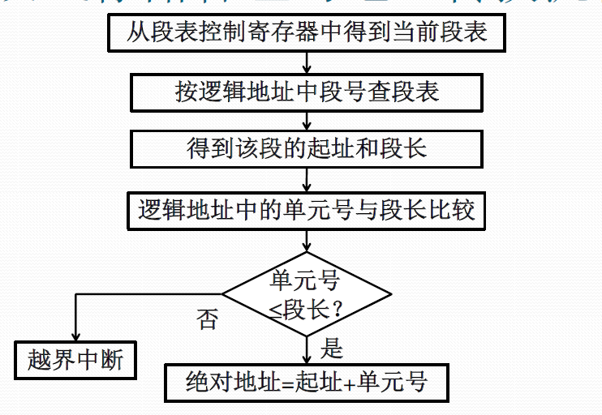
3.13 段式虚拟存储管理
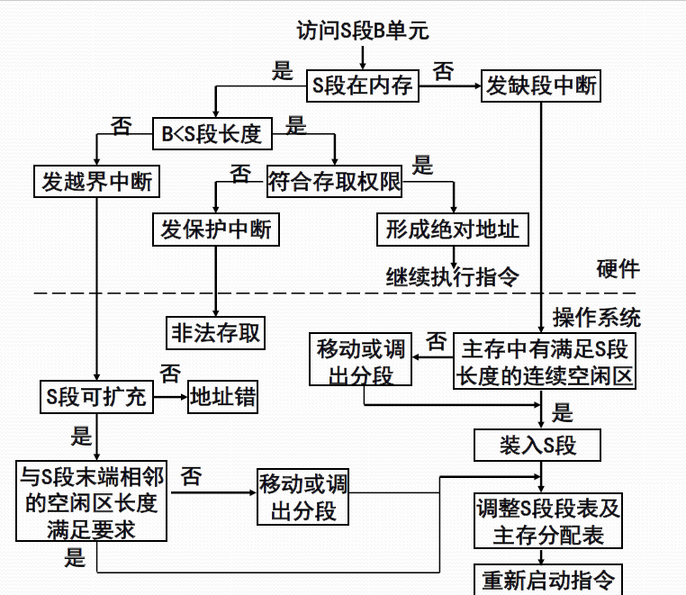
3.14 段页式存储管理
地址转换
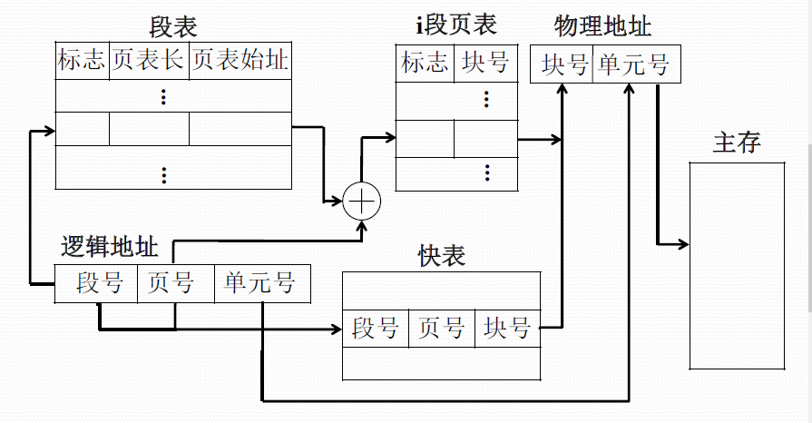
虚拟存储管理地址转换
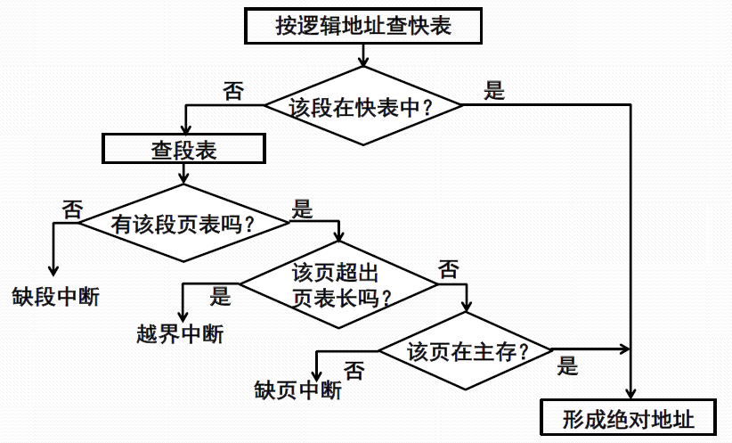
第四章
4.2 I/O控制方式
轮询方式
处理器发送I/O命令，一直等待设备就绪后才开始I/O操作，操作完成后继续其他操作
中断方式
发出I/O请求的进程如果不需要等待I/O执行则继续，需要等待则挂起自己等待执行结束后恢复
DMA
处理器将I/O操作下放给DMA处理，处理器只发出命令不插手后续
4.10 磁盘的驱动调度
调度策略
移动臂调度
先进先出
最短查找时间优先
单向扫描
- 总向一个方向扫面，归途不提供服务
双向扫描
- 每次向一个方向移动，遇到I/O请求便处理
电梯调度
- 每次移动选择沿移动臂移动方向最近的柱面
- 移动方向上无请求时改变方向
scan
- 到头
旋转调度
4.11 SPOOLing系统
组成
- 预输入程序：将程序从输入设备传送到磁盘输入井
- 缓输出程序：将程序从磁盘输出井传送到输出设备
- 井管理程序：控制作业和井之间的数据交换
第五章
5.1 文件的概念
引入文件的优点
- 用户使用方便
- 文件安全可靠
- 文件可备份
- 文件可共享
5.3 文件的存储
卷和块
- 卷是存储介质的物理单位，对应一盘磁带、一个硬盘分区、一块软盘、一个光盘片
- 块是存储介质上连续信息所组成的一个区域，也叫物理记录
- 主存储器和辅助存储器每次交换一块或整数块信息
5.4 文件的逻辑结构
流式文件
- 文件内的数据不再组成记录，只是由一串依次的字节组成的信息流序列
- 常常按长度来读取所需信息，也可以用插入的特殊字符作为分界
记录式文件
一种有结构的文件，它是若干逻辑记录信息所组成的记录流文件
5.5 记录的成组与分解
成组 （提前读）
- 若干个逻辑记录合并成一组，写入一个块
- 在输出缓冲区内进行，凑满一块后才将缓冲区内的信息写到存储介质上
分解 （推迟写）
当存储介质上的一个物理记录读进输入缓冲区后，把逻辑记录从块中分离出来
5.6 文件的物理结构
顺序文件（连续文件）
将一个文件中逻辑上连续的信息存放到存储介质的依次相邻的块中便形成顺序结构
eg：磁带文件、光盘文件
优点：顺序存取记录时速度较快
缺点：建立文件前需要能预先确定文件长度，以便分配存储空间；修改、插入和增加文件记录有困难
连接文件 （串联文件）
使用连接字来表示文件中各个物理块之间的先后次序，第一块文件信息的物理地址由文件目录给出，而每一块的连接字指出了文件的下一个物理块位置，连接字为0表示结束
eg：输入井、输出井
优点：易于对文件记录做增、删、改，易于动态增长记录；不必预先确知文件长度；存储空间利用
率高
缺点：存放指针需额外的存储空间；由于存取须通过缓冲区，待获得连接字后，才能找到下一物理块的地址，因而，仅适用于顺序存取
直接文件 （散列文件）
通过计算记录的关键字建立与其物理存储地址之间的对应关系
索引文件 （索引区+数据区）
索引文件为每个文件建立了一张索引表，其中，每个表目包含一个记录的键(或逻辑记录号)及其存储地址
5.13 辅助空间管理
位示图
使用若干字节构成一张表，表中每一字位对应一个物理块，字位的次序与块的相对次序一致。字位为“1”表示相应块已占用，字位为“0”状态表示该块空闲
第六章
6.14 死锁的产生
定义
一组进程处于死锁状态是指：每一个进程都在等待被另一个进程所占有的、不能抢占的资源。
6.15 死锁的防止
死锁产生的必要条件
- 互斥条件：进程应互斥使用资源，任一时刻一个资源仅为一个进程独占
- 独占型改为共享性资源可破
- 占有和等待条件：一个进程请求资源得不到满足而等待时，不释放已占有的资源
- 不剥夺条件：任一进程不能从另一进程那里抢夺资源
- 采用剥夺式调度可破
- 循环等待条件：存在一个循环等待链，每一个进程分别等待它前一个进程所持有的资源
- 层次分配可破
历年考试知识点整理
分段式存储管理不会产生内部碎片
- 需要多少分多少，不会多分
- 分页式会因为页的大小而导致分了页没用完，产生内部碎片
Linux系统中的slab分配器，采用伙伴系统内存管理方式
不会发生死锁， 从进程同时申请的角度出发，至少满足一个
操作系统中，临界区指在每个进程中访问临界资源的程序代码
实模式下16位CPU使用段偏移方式寻址能力为 1M
- 8086系列16位CPU使用20位地址线
循环扫描也称单向扫描
- FIFO
- 电梯调度
- SSTF 最短寻道
- 循环扫描
- 分布电梯调度
操作系统中三个最基础的抽象是
- 进程抽象
- 虚存抽象
- 文件抽象
引入他们，是为了方便对物理资源的管理和控制
进程映像
- 进程控制块：保存进程的标识信息、状态信息和控制信息
- 进程程序块：进程执行的程序空间
- 进程数据块：进程处理的数据空间
- 核心栈：进程在内核模式下运行时使用的堆栈
进程七状态图
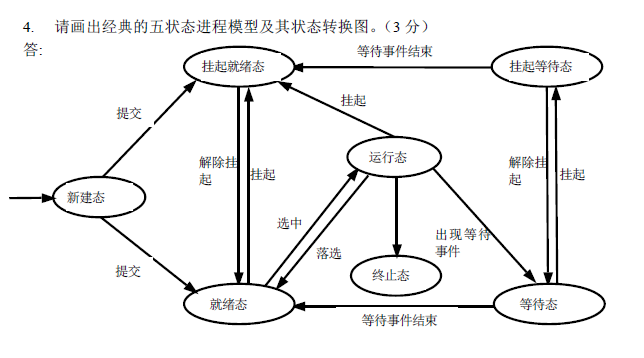
作业周转时间：从作业提交到作业完成的时间间隔
平均有效访问时间 T=(1-缺页率) * 不缺页的有效访问时间+缺页率 * 缺页异常耗时
PV相关
哲学家就餐问题1
semaphore fork[5];
for(int i=0;i<5;i++){fork[i]=1;}
semaphore room=4;
cobegin
process philosopher_i(){
while(true){
think();
P(room);
P(fork[i]);
P(fork[(i+1)%5]);
eat();
V(fork[i]);
V(fork[(i+1)%5]);
V(room);
}
}
coend哲学家就餐问题2
semaphore fork[5];
for(int i=0;i<5;i++){fork[i]=1;}
cobegin
process philosopher_i(){
while(true){
if(i%2==0){
P(fork[i]);
P(fork[(i+1)%5]);
eat();
V(fork[i]);
V(fork[(i+1)%5]);
}else{
P(fork[(i+1)%5]);
P(fork[i]);
eat();
V(fork[(i+1)%5]);
V(fork[i]);
}
}
}
coend生产者/消费者问题
一个生产者/一个消费者/一个缓冲单元
int B;
semaphore sput,sget;
sput=1;
sget=0;
process producer(){
while(true){
produce a product;
P(sput);
B=product;
V(sget);
}
}
process consumer(){
while(true){
P(sget);
product=B;
V(sput);
consume a product;
}
}一个生产者/一个消费者/多个缓冲单元
int B[k];
semaphore sput,sget;
sput=k;
sget=0;
int putptr,getptr=0;
process producer(){
while(true){
produce a product;
P(sput);
B[putptr] = product;
putptr=(putptr+1) % k;
V(sget);
}
}
process consumer(){
while(true){
P(sget);
product = B[getptr];
getptr=(getptr+1)%k;
V(sput);
consume a product;
}
}多个生产者/多个消费者/多个缓冲单元
int B[k];
semaphore sput,sget,s;
sput=k;
sget=0;
int putptr,getptr=0;
s=1;
process producer_i(){
while(true){
produce a product;
P(sput);
P(s);
B[putptr] = product;
putptr=(putptr+1) % k;
V(s);
V(sget);
}
}
process consumer_j(){
while(true){
P(sget);
P(s);
product = B[getptr];
getptr=(getptr+1)%k;
V(s);
V(sput);
consume a product;
}
}读者/写者问题
读者优先
semaphore rmutex,wmutex;
rmutex=1;
wmutex=1;
int readcount=0;
process reader_i(){
while(true){
P(rmutex);
if(readcount==0)P(wmutex);
readcount++;
V(rmutex);
读文件;
P(rmutex);
readcount--;
if(readcount==0)V(wmutex);
V(rmutex);
}
}
process writer_i(){
while(true){
P(wmutex);
写文件;
V(Wmutex);
}
}写者优先
semaphore rmutex=1,wmutex=1;
semaphore x=1,y=1,z=1;
int readcount=0,writecount=0;
process reader(){
P(z);
P(rmutex);
P(x);
readcount++;
if(readcount==1)P(wmutex);
V(x);
V(rmutex);
V(z);
读文件;
P(x);
readcount--;
if(readcount==0)V(wmutex);
V(x);
}
process writer(){
P(y);
writecount++;
if(writecount==1)P(rmutex);
V(y);
P(wmutex);
写文件;
V(wmutex);
P(y);
writecount--;
if(writecount==0)V(rmutex);
V(y);
}理发师问题
int waiting=0;
int CHAIRS=N;
semophore customers,barbers,mutex;
customers=0;barbers=0;mutex=1;
process barber(){
while(true){
P(customers);
P(mutex);
waiting--;
V(barbers);
V(mutex);
cut_hair();
}
}
process customer_i(){
P(mutex);
if(waiting<CHAIRS){
waiting++;
V(customers);
V(mutex);
P(barbers);
get_haircut();
}else{
V(mutex);
}
}